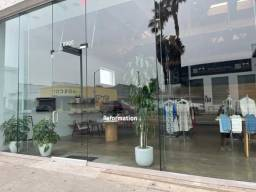
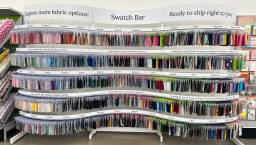
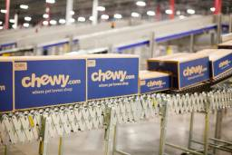

Retail Dive - Latest News
https://www.retaildive.com/news/
Retail Dive provides news and analysis for retail executives. We cover topics like retail tech, marketing, e-commerce, logistics, in-store operations, corporate retail news, and more.
フィード

Reformation charts path to double store fleet in 5 years
Retail Dive - Latest News
The DTC brand’s second quarter net revenue jumped 24%, marking a solid start to its debut as a publicly traded company.
1日前
Nordstrom alum takes the CEO reins at Rent the Runway
Retail Dive - Latest News
Paige Thomas, who starts Monday, is one of a cohort hailing from the department store, including interim CEO Teri Bariquit.
1日前
Destination XL maps out a turnaround plan
Retail Dive - Latest News
The company’s sales declines continued in the second quarter, but interim CEO Lionel Conacher told analysts “a resumption in sales growth is imminent.”
1日前

After demise of Joann locations, fabric is now in 90% of Michaels stores
Retail Dive - Latest News
The craft retailer has expanded its Knit & Sew Shop and is hosting events in honor of National Sewing Month to celebrate.
1日前

The Weekly Closeout: Chewy’s sales jump and a retail exec turns politician
Retail Dive - Latest News
The pet retailer scored more than 7% net sales growth in the most recent quarter. Meanwhile, former Hudson’s Bay CEO Helena Foulkes could soon be Rhode Island’s governor.
1日前
Amazon pilots ad services in ChatGPT: What marketers need to know
Retail Dive - Latest News
The managed service offering, which is in a U.S. pilot and available via Amazon DSP, comes as ChatGPT Ads recently hit a revenue milestone.
1日前
Macy’s plows tariff refunds into its rebound
Retail Dive - Latest News
The department store has been backing away from promotions, so refunds will mostly go toward long-term growth plans rather than price cuts.
2日前
Saks who? Bloomingdale’s hits sales volume record
Retail Dive - Latest News
As Saks Fifth Avenue and Neiman Marcus work on their post-bankruptcy turnarounds, Macy’s Inc.’s upscale department store is taking market share.
2日前
American Eagle falls flat with women, again
Retail Dive - Latest News
Q2 earnings showed strength in the namesake brand's men’s offerings, but sales remained soft with women — and Aerie carried overall growth.
2日前
Target introduces AI-powered photo search, review features
Retail Dive - Latest News
The retailer is accelerating its AI capabilities to boost personalization and product discovery.
2日前